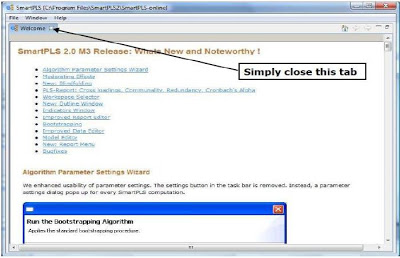
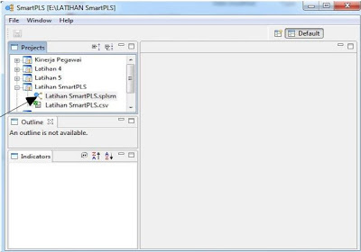

SmartPLS merupakan salah satu software statistik untuk metode structural Equation Modeling (SEM) berbasis varians. Software ini dapat diunduh di SmartPLS. Pada saat ini yang digunakan pada versi SmartPLS 2.0. SmartPLS menyediakan menu untuk menggambar model SEM, sehingga mempermudah pemakainya tanpa harus menuliskan kode seperti software lainnya. Setelah mendownload dan menginstal, langkah selanjutnya cara memulainya sebagai berikut :.
1. Tampilan pertama pada SmartPLS.Klik OK

2. Klik Close seperti pada gambar diatas.
Sekarang sudah terlihat menu utama pada SmartPLS
Langkah analisis dengan SmartPLS :
Pada File name, cari folder dan nama file yang akan dianalisis. Kali ini contohnya di folder E, nama file : Latihan SmartPLS. Seperti terlihat pada gambar di bawah ini. Kemudian klik Next.
3. Selanjutnya adalah melakukan setting data. Caranya :
4. Tampilan berikutnya seperti gambar di bawah ini. Nama project yang tadi dibuat sekarang sudah terlihat.
5. Selanjutnya kita akan menggambar path diagram (diagram alur) model SEM yang akan dianalisis.